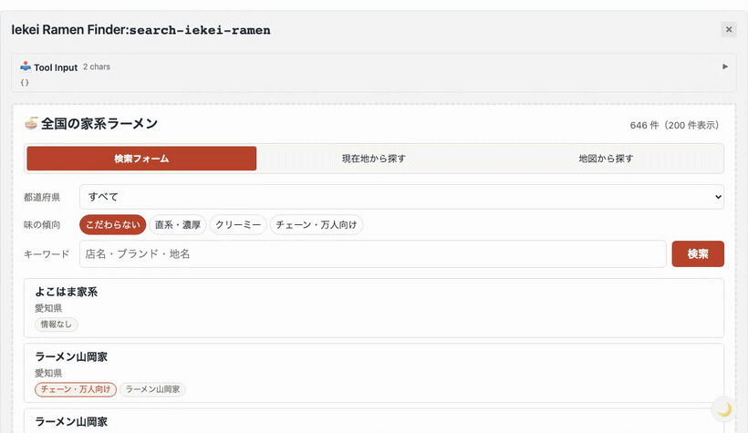

<title>家系ラーメンを探す MCP Apps</title>
<link rel="preconnect" href="https://fonts.googleapis.com">
<link rel="preconnect" href="https://fonts.gstatic.com" crossorigin>
<link rel="stylesheet" href="https://fonts.googleapis.com/css2?family=Noto+Sans+JP:wght@400;500;700;900&family=JetBrains+Mono:wght@400;500;700&display=swap">

<style>
/*
 * 勉強会スライド。既存の MCP 勉強会資料のテイストに合わせている。
 * 白地／見出し下の罫線／青と橙の 2 アクセント／Part の区切りだけ濃紺地。
 * 投影前提なのでライト一本に振り、色はすべて明示している。
 */
:root {
  --paper:      #faf9f7;
  --ink:        #1a1d26;
  --ink-deep:   #14161d;
  --text:       #2c3038;
  --muted:      #6d7380;
  --faint:      #9aa0ab;

  --blue:       #2563eb;
  --blue-tint:  #eef3fe;
  --blue-edge:  #c3d4fb;

  --orange:     #c2410c;
  --orange-lit: #e2762e;
  --orange-tint:#fdf2ea;
  --orange-edge:#f3d3b8;

  --card:       #ffffff;
  --card-edge:  #e4e2de;
  --slab:       #edeae5;

  --dark:       #1e212b;

  --sans: "Noto Sans JP", "Hiragino Sans", "Yu Gothic", sans-serif;
  --mono: "JetBrains Mono", ui-monospace, SFMono-Regular, Menlo, monospace;

  --gutter: clamp(1.5rem, 5vw, 4.5rem);
}

* { box-sizing: border-box; }

html {
  scroll-behavior: smooth;
  scroll-snap-type: y mandatory;
  background: var(--paper);
}
@media (prefers-reduced-motion: reduce) { html { scroll-behavior: auto; } }

body {
  margin: 0;
  background: var(--paper);
  color: var(--text);
  font-family: var(--sans);
  line-height: 1.75;
  -webkit-font-smoothing: antialiased;
}

/* ---------- スライドの器 ---------- */

.slide {
  scroll-snap-align: start;
  scroll-snap-stop: always;
  min-height: 100svh;
  padding-block: clamp(2rem, 7vh, 4rem) clamp(2.5rem, 7vh, 4rem);
  /* 列を中央に置くのは padding の役目。中身は左揃えのまま揃う */
  padding-inline: max(var(--gutter), (100% - 74rem) / 2);
  display: flex;
  flex-direction: column;
  justify-content: center;
  gap: clamp(0.9rem, 2.2vh, 1.6rem);
  background: var(--paper);
  position: relative;
}

.slide > * { width: 100%; max-width: 100%; margin-inline: 0; }

.pageno {
  position: absolute;
  right: var(--gutter);
  bottom: clamp(1rem, 3vh, 1.8rem);
  font-family: var(--mono);
  font-size: 0.7rem;
  font-weight: 700;
  color: var(--faint);
  font-variant-numeric: tabular-nums;
  margin: 0;
  width: auto;
}

/* ---------- 見出し＋罫線 ---------- */

h1, h2, h3 { margin: 0; font-weight: 700; text-wrap: balance; color: var(--ink); }

.slide-head { display: flex; flex-direction: column; gap: clamp(0.5rem, 1.4vh, 0.9rem); }

.slide-head h2 {
  font-size: clamp(1.45rem, 3.4vw, 2.35rem);
  line-height: 1.3;
  letter-spacing: -0.01em;
}

.slide-head::after {
  content: "";
  display: block;
  height: 2px;
  background: var(--ink);
}

/* ---------- 表紙 ---------- */

.cover h1 {
  font-size: clamp(2rem, 5.4vw, 3.6rem);
  line-height: 1.25;
  letter-spacing: -0.02em;
}

/* ---------- Part 区切り ---------- */

.slide.part { background: var(--dark); }

.part-block {
  border-left: 4px solid var(--orange-lit);
  padding-left: clamp(1rem, 2.5vw, 2rem);
  display: flex;
  flex-direction: column;
  gap: 0.45rem;
}

.part-block .no {
  font-family: var(--mono);
  font-size: clamp(0.8rem, 1.5vw, 1rem);
  letter-spacing: 0.28em;
  color: var(--orange-lit);
}

.part-block h2 {
  color: #ffffff;
  font-size: clamp(1.7rem, 4.4vw, 3rem);
  line-height: 1.25;
}

.slide.part .pageno { color: #5d6470; }

/* ---------- 本文 ---------- */

p { margin: 0; }

.lead {
  font-size: clamp(1rem, 1.9vw, 1.25rem);
  line-height: 1.85;
  max-width: 54rem;
}

/* 文字だけで見せるスライド用の大きめの一文 */
.statement {
  font-size: clamp(1.3rem, 3.2vw, 2.1rem);
  font-weight: 700;
  line-height: 1.55;
  color: var(--ink);
  max-width: 42rem;
  letter-spacing: -0.01em;
}

.statement .sm {
  display: block;
  max-width: 48rem;
  font-size: clamp(0.9rem, 1.7vw, 1.1rem);
  font-weight: 400;
  color: var(--muted);
  margin-top: 1.1rem;
  line-height: 1.85;
  letter-spacing: 0;
}

/* 折り返さず 1 行で読ませたい導入文に使う */
.lead.wide { max-width: none; }

.note {
  font-size: clamp(0.84rem, 1.5vw, 0.98rem);
  color: var(--muted);
  line-height: 1.8;
  max-width: 60rem;
}

.note a { color: var(--blue); text-decoration: none; overflow-wrap: anywhere; }
.note a:hover { text-decoration: underline; text-underline-offset: 3px; }

/* 余白に手で書き足したような一言。使いすぎない */
.memo {
  align-self: flex-start;
  font-size: clamp(0.85rem, 1.55vw, 1rem);
  color: var(--orange);
  font-weight: 700;
  border-bottom: 2px dashed var(--orange-edge);
  padding-bottom: 0.2rem;
  transform: rotate(-0.7deg);
  width: fit-content;
  max-width: 100%;
}

strong { color: var(--orange); font-weight: 700; }
.b { color: var(--blue); font-weight: 700; }

/* ---------- 番号つきカード ---------- */

.numlist { display: flex; flex-direction: column; gap: clamp(0.6rem, 1.6vh, 1rem); }

.numrow {
  display: grid;
  grid-template-columns: auto 1fr;
  align-items: start;
  gap: 1.1rem;
  background: var(--card);
  border: 1px solid var(--card-edge);
  border-left: 4px solid var(--blue);
  border-radius: 5px;
  padding: clamp(0.85rem, 2vh, 1.25rem) clamp(1rem, 2.5vw, 1.8rem);
}

.numrow.warm { border-left-color: var(--orange); }

/* 件数を右端に添えるときだけ 3 カラムにする */
.numrow.counted { grid-template-columns: auto 1fr auto; align-items: center; }

.numrow .count {
  font-family: var(--mono);
  font-weight: 700;
  font-size: clamp(1.05rem, 2vw, 1.35rem);
  color: var(--ink);
  font-variant-numeric: tabular-nums;
  white-space: nowrap;
}
.numrow .count .u { font-size: 0.68em; color: var(--muted); font-weight: 400; }
.numrow.warm .count { color: var(--muted); }

.numrow .n {
  font-family: var(--mono);
  font-weight: 700;
  font-size: clamp(1rem, 1.9vw, 1.2rem);
  color: var(--blue);
  line-height: 1.6;
  font-variant-numeric: tabular-nums;
}

.numrow .body { display: flex; flex-direction: column; gap: 0.2rem; }

.numrow .t {
  font-weight: 700;
  color: var(--ink);
  font-size: clamp(0.98rem, 1.8vw, 1.16rem);
  line-height: 1.55;
}

.numrow .d { font-size: clamp(0.82rem, 1.5vw, 0.95rem); color: var(--muted); line-height: 1.7; }

.numrow .dot {
  width: 1.9rem;
  height: 1.9rem;
  border-radius: 50%;
  background: var(--orange);
  color: #fff;
  font-family: var(--mono);
  font-weight: 700;
  font-size: 0.9rem;
  display: grid;
  place-items: center;
  margin-top: 0.15rem;
}

/* ---------- 帯 ---------- */

.band {
  border-left: 5px solid var(--orange);
  background: var(--orange-tint);
  padding: clamp(0.8rem, 2vh, 1.15rem) clamp(1rem, 2.5vw, 1.8rem);
  font-weight: 700;
  color: var(--ink);
  font-size: clamp(1rem, 1.9vw, 1.25rem);
  line-height: 1.6;
}

.band.cool { border-left-color: var(--blue); background: var(--blue-tint); }

/* ---------- 2 カラム ---------- */

.compare {
  display: grid;
  grid-template-columns: repeat(auto-fit, minmax(18rem, 1fr));
  gap: clamp(0.75rem, 2vw, 1.4rem);
  align-items: stretch;
}

.pane {
  background: var(--card);
  border: 1px solid var(--card-edge);
  border-radius: 6px;
  padding: clamp(1rem, 2.4vh, 1.5rem) clamp(1.1rem, 2.5vw, 1.7rem);
  display: flex;
  flex-direction: column;
  gap: 0.55rem;
}

.pane h3 { font-size: clamp(1rem, 1.9vw, 1.2rem); line-height: 1.45; }
.pane p { font-size: clamp(0.86rem, 1.55vw, 1rem); line-height: 1.75; color: var(--text); }
.pane .muted { color: var(--muted); }

.pane.cool { border-color: var(--blue-edge); }
.pane.cool h3 { color: var(--blue); }
.pane.flat { background: var(--slab); border-color: transparent; }
.pane.flat h3 { color: var(--muted); }

/* ---------- 表 ---------- */

.tablewrap { overflow-x: auto; }

table { width: 100%; border-collapse: collapse; font-size: clamp(0.82rem, 1.5vw, 0.98rem); background: var(--card); }

thead th {
  background: var(--ink-deep);
  color: #ffffff;
  font-weight: 700;
  text-align: left;
  padding: 0.7rem 1rem;
  white-space: nowrap;
}

tbody td { padding: 0.65rem 1rem; border-bottom: 1px solid var(--card-edge); color: var(--text); vertical-align: top; }
tbody tr:last-child td { border-bottom: none; }
tbody td:first-child { font-weight: 700; color: var(--ink); white-space: nowrap; }
tbody td:last-child { font-variant-numeric: tabular-nums; }

/* ---------- 図 ---------- */

.diagram {
  display: flex;
  flex-wrap: wrap;
  align-items: center;
  gap: clamp(0.4rem, 1.2vw, 0.9rem);
  overflow-x: auto;
  padding-bottom: 0.2rem;
}

.box {
  background: var(--card);
  border: 1.5px solid var(--card-edge);
  border-radius: 5px;
  padding: 0.75rem 1.1rem;
  min-width: 8.5rem;
  flex: 1 1 8.5rem;
  display: flex;
  flex-direction: column;
  gap: 0.1rem;
  text-align: center;
}

.box .t { font-weight: 700; color: var(--ink); font-size: clamp(0.88rem, 1.6vw, 1rem); line-height: 1.4; }
.box .s { font-size: 0.78rem; color: var(--muted); line-height: 1.5; }

.box.cool { border-color: var(--blue); background: var(--blue-tint); }
.box.cool .t { color: var(--blue); }
.box.flat { background: var(--slab); border-color: transparent; }

.tie { flex: none; color: var(--muted); font-family: var(--mono); font-weight: 700; font-size: 1rem; }

/* ---------- 数字（1 箇所だけ使う） ---------- */

.stats {
  display: grid;
  grid-template-columns: repeat(auto-fit, minmax(7.5rem, 1fr));
  gap: 1px;
  background: var(--card-edge);
  border: 1px solid var(--card-edge);
  border-radius: 5px;
  overflow: hidden;
}

.stat { background: var(--card); padding: clamp(0.7rem, 1.8vh, 1.05rem) clamp(0.8rem, 2vw, 1.3rem); display: flex; flex-direction: column; }

.stat .v {
  font-size: clamp(1.4rem, 3.2vw, 2.1rem);
  font-weight: 900;
  color: var(--ink);
  line-height: 1.2;
  font-variant-numeric: tabular-nums;
  letter-spacing: -0.02em;
}
.stat.hi .v { color: var(--orange); }
.stat .k { font-size: 0.78rem; color: var(--muted); line-height: 1.5; }

/* ---------- 会話 ---------- */

.talk { display: flex; flex-direction: column; gap: 0.55rem; max-width: 42rem; }

.line {
  padding: 0.6rem 1.05rem;
  border-radius: 12px;
  font-size: clamp(0.9rem, 1.65vw, 1.05rem);
  line-height: 1.7;
  max-width: 82%;
  border: 1px solid var(--card-edge);
  background: var(--card);
}

.line.me { align-self: flex-end; background: var(--blue-tint); border-color: var(--blue-edge); border-bottom-right-radius: 3px; }
.line.sign { align-self: flex-start; background: var(--slab); border-color: transparent; border-bottom-left-radius: 3px; font-weight: 700; color: var(--ink); }

.line .who {
  display: block;
  font-family: var(--mono);
  font-size: 0.66rem;
  letter-spacing: 0.12em;
  color: var(--faint);
  margin-bottom: 0.15rem;
  font-weight: 500;
}

/* ---------- コード ---------- */

pre {
  margin: 0;
  background: var(--card);
  border: 1px solid var(--card-edge);
  border-radius: 5px;
  padding: clamp(0.8rem, 2vh, 1.15rem) clamp(1rem, 2.4vw, 1.5rem);
  overflow-x: auto;
  font-family: var(--mono);
  font-size: clamp(0.7rem, 1.25vw, 0.85rem);
  line-height: 1.8;
  color: var(--text);
}

code { font-family: var(--mono); }

p code, td code, .note code, .numrow code, .statement code {
  background: var(--slab);
  padding: 0.1em 0.4em;
  border-radius: 3px;
  font-size: 0.88em;
  color: var(--ink);
}

.c-kw { color: var(--blue); font-weight: 700; }
.c-st { color: var(--orange); }
.c-cm { color: var(--faint); }

/* ---------- 画像 ---------- */

.demoframe { display: flex; justify-content: center; }

.demoframe img {
  max-width: min(100%, 58rem);
  max-height: 64svh;
  width: auto;
  border: 1px solid var(--card-edge);
  border-radius: 5px;
}

/* ---------- 参考資料 ---------- */

.refs { display: flex; flex-direction: column; gap: clamp(0.7rem, 1.8vh, 1.1rem); }

.ref { border-left: 3px solid var(--blue-edge); padding-left: 1.1rem; display: flex; flex-direction: column; gap: 0.15rem; }

.ref .t { font-weight: 700; color: var(--ink); font-size: clamp(0.92rem, 1.7vw, 1.05rem); line-height: 1.5; }
.ref a { color: var(--blue); font-size: clamp(0.82rem, 1.5vw, 0.95rem); overflow-wrap: anywhere; text-decoration: none; }
.ref a:hover { text-decoration: underline; text-underline-offset: 3px; }

/* ---------- 進行の目盛り ---------- */

.rail {
  position: fixed;
  top: 0; right: 0; bottom: 0;
  width: 1.6rem;
  display: flex;
  flex-direction: column;
  align-items: center;
  justify-content: center;
  gap: 4px;
  z-index: 10;
  pointer-events: none;
}

.rail .tick { width: 4px; height: 4px; border-radius: 50%; background: #d5d2cc; transition: background 0.2s, transform 0.2s; }
.rail .tick.on { background: var(--blue); transform: scale(1.7); }

@media (max-width: 760px) { .rail { display: none; } }

:focus-visible { outline: 2px solid var(--blue); outline-offset: 3px; }
</style>

<nav class="rail" aria-hidden="true"></nav>

<main>

<!-- 1 表紙 ───────────────────────────────── -->
<section class="slide cover">
  <div>
    <h1>好きを形に。<br>家系ラーメンを探す MCP Appsを作った</h1>
  </div>
  <p class="pageno"></p>
</section>

<!-- 2 デモ（つかみ） ───────────────────────────────── -->
<section class="slide">
  <div class="slide-head"><h2>作ったアプリ</h2></div>
  <div class="demoframe">
    
  </div>
  <p class="note">Claude に「横浜駅の近くの家系ラーメンを教えて」と話しかけると、チャットの中に検索画面が出ます。<br>絞り込み → 現在地から検索 → 地図、まで全部この中で完結します。</p>
  <p class="pageno"></p>
</section>

<!-- 2 Part 1 ───────────────────────────────── -->
<section class="slide part">
  <div class="part-block">
    <span class="no">Part 1</span>
    <h2>アプリ誕生のきっかけ</h2>
  </div>
  <p class="pageno"></p>
</section>

<!-- 3 動機 ───────────────────────────────── -->
<section class="slide">
  <div class="slide-head"><h2>MCP Apps で何か作ってみたかった</h2></div>
  <p class="lead">以前 MCP について調べたことがあり、その流れで <span class="b">MCP Apps</span> が気になっていました。チャットの中に操作できる画面が出せると知って、単純に面白そうだと思いました。</p>
  <div class="refs">
    <div class="ref">
      <span class="t">そのときの資料 — MCP とは何か / 2026-07-28 の仕様で何が変わったのか</span>
      <a href="https://speakerdeck.com/y_yamazaki/mcp-toha-nani-ka-2026-07-28-no-shiyou-de-nani-ga-kawata-no-ka">speakerdeck.com/y_yamazaki/mcp-toha-nani-ka-2026-07-28-no-shiyou-de-nani-ga-kawata-no-ka</a>
    </div>
  </div>
  <p class="pageno"></p>
</section>

<!-- 4 題材がない ───────────────────────────────── -->
<section class="slide">
  <p class="statement">
    で、何を作る？
    <span class="sm">ここで手が止まりました。<br>せっかくなので、最近あったことの中から何かネタにできないかと考えてみました。</span>
  </p>
  <p class="pageno"></p>
</section>

<!-- 家系ラーメンとの出会い ───────────────────────────────── -->
<section class="slide">
  <div class="slide-head"><h2>家系ラーメンを最近初めて食べて美味しかった</h2></div>
  <p class="lead wide">豚骨醤油の濃いスープ、太めの麺、ほうれん草と海苔とチャーシュー。ライスが無限に進みます。</p>
  <p class="lead">すっかり気に入って、ほかの店にも行ってみようと思いました。</p>
  <p class="pageno"></p>
</section>

<!-- 困っていたこと ───────────────────────────────── -->
<section class="slide">
  <div class="slide-head"><h2>ところが、どれが家系なのか分からない</h2></div>
  <div class="talk">
    <div class="line me"><span class="who">わたし</span>お、ラーメン屋だ。家系かな？</div>
    <div class="line sign"><span class="who">看板</span>ラーメン ○○家</div>
    <div class="line me"><span class="who">わたし</span>……「家」がつくだけの店かもしれない</div>
  </div>
  <p class="note">看板に「家系」と書いてある店ばかりではありません。毎回スマホで調べ直していました。</p>
  <p class="pageno"></p>
</section>

<!-- 7 定義がない ───────────────────────────────── -->
<section class="slide">
  <div class="slide-head"><h2>調べたら、公式な定義がなかった（多分）</h2></div>
  <p class="lead wide">1974 年創業の<span class="b">吉村家</span>（横浜）が総本山。そこから独立した店、さらにその店から独立した店……と枝分かれして広がっていった</p>
  <div class="diagram">
    <div class="box cool"><span class="t">吉村家</span><span class="s">1974 / 横浜・総本山</span></div>
    <span class="tie">→</span>
    <div class="box"><span class="t">直系</span><span class="s">杉田家 / 厚木家 など</span></div>
    <span class="tie">→</span>
    <div class="box"><span class="t">系統</span><span class="s">六角家系 / 壱六家系 …</span></div>
    <span class="tie">→</span>
    <div class="box flat"><span class="t">資本系</span><span class="s">町田商店 / 壱角家 など</span></div>
  </div>
  <p class="pageno"></p>
</section>

<!-- 8 決まった ───────────────────────────────── -->
<section class="slide">
  <p class="statement">
    手軽に家系ラーメンを探したい
    <span class="sm">定義がはっきりしないのは分かりました。<br><strong>それなら、判断は AI に任せてしまえばいい。</strong><br>AI に聞くと近くの家系を教えてくれる。そういうアプリを作ることにしました。</span>
  </p>
  <p class="pageno"></p>
</section>

<!-- 9 Part 2 ───────────────────────────────── -->
<section class="slide part">
  <div class="part-block">
    <span class="no">Part 2</span>
    <h2>MCP Apps とは何か</h2>
  </div>
  <p class="pageno"></p>
</section>

<!-- 10 MCP のおさらい ───────────────────────────────── -->
<section class="slide">
  <div class="slide-head"><h2>おさらい：MCP は AI と外部をつなぐ共通規格</h2></div>
  <p class="lead">自分で <span class="b">MCP サーバー</span>を立てて「こんな機能があるよ」と宣言すると、AI が会話の流れから判断して呼び出してくれます。</p>
  <div class="compare">
    <div class="pane">
      <h3>こちらが用意するもの</h3>
      <p>機能（tool）の名前・説明・引数。<br>今回なら「近くの家系を探す（緯度・経度）」。</p>
    </div>
    <div class="pane">
      <h3>AI がやること</h3>
      <p>「横浜駅の近くの家系を教えて」から、<br>どの機能を使うかを判断して呼び出す。</p>
    </div>
  </div>
  <div class="band">ただし、MCP が返せるのは<strong>テキストだけ</strong>。インタラクティブ UI は表示されない</div>
  <p class="pageno"></p>
</section>

<!-- 11 MCP Apps ───────────────────────────────── -->
<section class="slide">
  <div class="slide-head"><h2>MCP Apps は、MCP にインタラクティブな UI を加えたもの</h2></div>
  <div class="compare">
    <div class="pane flat">
      <h3>MCP だけのとき</h3>
      <pre><span class="c-cm">// 文字しか返せない</span>
1. 壱八家 (クリーミー / 261m)
   神奈川県 横浜市 西区高島2丁目
   営業: 11:00-23:00</pre>
      <p class="muted">読めるけれど、地図で見たい・条件を変えたい、には応えられない。</p>
    </div>
    <div class="pane cool">
      <h3>MCP Apps のとき</h3>
      <pre><span class="c-cm">// HTML を返すと、チャットの中で描画される</span>
&lt;<span class="c-kw">地図</span>&gt;　&lt;<span class="c-kw">検索フォーム</span>&gt;　&lt;<span class="c-kw">店舗カード</span>&gt;</pre>
      <p>会話の中に<span class="b">触れる画面</span>が出る。押す・選ぶ・絞り込むができる。</p>
    </div>
  </div>
  <p class="pageno"></p>
</section>

<!-- 12 実装 ───────────────────────────────── -->
<section class="slide">
  <div class="slide-head"><h2>実装は、2 つ登録するだけ</h2></div>
  <div class="diagram">
    <div class="box"><span class="t">① tool</span><span class="s">データを返す係<br>「近くの家系を探す」</span></div>
    <span class="tie">＋</span>
    <div class="box"><span class="t">② resource</span><span class="s">画面の HTML を返す係</span></div>
    <span class="tie">＝</span>
    <div class="box cool"><span class="t">MCP Apps</span><span class="s">チャットに画面が出る</span></div>
  </div>
  <pre><span class="c-cm">// tool 側に「この画面を使って」と書いて紐づける</span>
registerAppTool(server, <span class="c-st">"find-nearby-iekei-ramen"</span>, {
  _meta: { ui: { resourceUri } },   <span class="c-cm">// ← ここが紐づけ</span>
});

<span class="c-cm">// resource 側は、ビルド済みの HTML を返すだけ</span>
registerAppResource(server, resourceUri, ...);</pre>
  <p class="note">ポイントは <code>_meta.ui.resourceUri</code> の一行。これで「この機能にはこの画面」が決まります。</p>
  <p class="pageno"></p>
</section>

<!-- 公式 Skill ───────────────────────────────── -->
<section class="slide">
  <div class="slide-head"><h2>しかも、公式が Skill を配っている</h2></div>
  <p class="lead wide">AI コーディングエージェント向けに <span class="b">create-mcp-app</span> という Skill が公式配布されています。<br>Skill をインストールすれば、エージェントが MCP Apps の作り方を理解した状態で始められます。</p>
  <pre><span class="c-cm"># Claude Code の場合</span>
/plugin marketplace add modelcontextprotocol/ext-apps
/plugin install mcp-apps@modelcontextprotocol-ext-apps

<span class="c-cm"># ほかのエージェント（Cursor / Codex / Gemini CLI など）</span>
npx skills add modelcontextprotocol/ext-apps</pre>
  <div class="band cool">Skill を入れれば、プロンプトだけで動くものが作れる</div>
  <p class="note">今回のアプリも、まずこの Skill に雛形を作ってもらうところから始めました。<br>出典: <a href="https://modelcontextprotocol.io/extensions/apps/build">modelcontextprotocol.io/extensions/apps/build</a></p>
  <p class="pageno"></p>
</section>

<!-- 13 Part 3 ───────────────────────────────── -->
<section class="slide part">
  <div class="part-block">
    <span class="no">Part 3</span>
    <h2>作ったもの</h2>
  </div>
  <p class="pageno"></p>
</section>

<!-- 14 3モード ───────────────────────────────── -->
<section class="slide">
  <div class="slide-head"><h2>3 つの機能</h2></div>
  <div class="numlist">
    <div class="numrow">
      <span class="n">01</span>
      <span class="body">
        <span class="t">検索フォーム</span>
        <span class="d">都道府県・味の傾向・キーワードで全国から絞る</span>
      </span>
    </div>
    <div class="numrow">
      <span class="n">02</span>
      <span class="body">
        <span class="t">現在地から探す</span>
        <span class="d">位置情報か地名から、近い順に 5 店舗を提案する</span>
      </span>
    </div>
    <div class="numrow">
      <span class="n">03</span>
      <span class="body">
        <span class="t">地図から探す</span>
        <span class="d">全国 646 店舗を日本地図にプロットする</span>
      </span>
    </div>
  </div>
  <p class="note">画面は 1 つで、タブで切り替わります。使うときは「横浜駅の近くの家系ラーメンを教えて」と話しかけるだけ。</p>
  <p class="pageno"></p>
</section>

<!-- 17 データ ───────────────────────────────── -->
<section class="slide">
  <div class="slide-head"><h2>いちばん手間がかかったのはデータ集め</h2></div>
  <p class="lead wide">グルメサイトの API は規約と料金の面で使えません。<br><span class="b">OpenStreetMap</span> から取りました。誰でも自由に使える地図データベースです。</p>
  <div class="stats">
    <div class="stat hi"><span class="v">752</span><span class="k">件の候補</span></div>
    <div class="stat"><span class="v">47</span><span class="k">都道府県</span></div>
    <div class="stat"><span class="v">25</span><span class="k">分</span></div>
    <div class="stat"><span class="v">0</span><span class="k">円</span></div>
  </div>
  <pre><span class="c-cm">// 都道府県ごとに 1 回、47 回投げたクエリ（Overpass API）</span>
area[<span class="c-st">"admin_level"</span>=<span class="c-st">"4"</span>][<span class="c-st">"name"</span>=<span class="c-st">"神奈川県"</span>];   <span class="c-cm">← 県で範囲を絞る</span>
(
  nwr[<span class="c-st">"cuisine"</span>~<span class="c-st">"ramen"</span>][<span class="c-st">"name"</span>~<span class="c-st">"家"</span>];  <span class="c-cm">← ラーメン屋で店名に「家」</span>
  nwr[<span class="c-st">"name"</span>~<span class="c-st">"家系|町田商店"</span>];           <span class="c-cm">← 店名に「家系」か「町田商店」</span>
);</pre>
  <p class="note">全国を 1 回で取ろうとするとタイムアウトするので、県ごとに分けました。<strong>条件はわざとゆるく</strong>して、絞り込みは手元でやります。</p>
  <p class="pageno"></p>
</section>

<!-- 18 判定 ───────────────────────────────── -->
<section class="slide">
  <div class="slide-head"><h2>集めた 752 件を、どう振り分けたか</h2></div>
  <p class="lead wide">公式な定義がないので、<strong>店名から推測する</strong>しかありません。3 つのルールを順に当てました。</p>
  <div class="numlist">
    <div class="numrow warm counted">
      <span class="n">①</span>
      <span class="body">
        <span class="t">明らかに違うものを外す</span>
        <span class="d">ラーメン屋ですらないもの（杉田家<em>住宅</em>＝重要文化財）、別系統の有名店（本家第一旭・無敵家）</span>
      </span>
      <span class="count">106 <span class="u">件</span></span>
    </div>
    <div class="numrow counted">
      <span class="n">②</span>
      <span class="body">
        <span class="t">家系と断定できるもの　→　<span class="b">確定</span></span>
        <span class="d">店名かブランドに「家系」を含む、または既知の家系ブランド 25 個のどれかと一致する</span>
      </span>
      <span class="count">409 <span class="u">件</span></span>
    </div>
    <div class="numrow counted">
      <span class="n">③</span>
      <span class="body">
        <span class="t">断定はできないが怪しいもの　→　<span class="b">可能性あり</span></span>
        <span class="d">ラーメン屋で、支店名を除いた店名が「家」で終わる（他ジャンルの語を含むものは除く）</span>
      </span>
      <span class="count">237 <span class="u">件</span></span>
    </div>
  </div>
  <div class="band cool">残った <strong>646 店舗</strong>がアプリのデータ。白か黒かを決めず、確信度は UI のバッジで区別する</div>
  <p class="pageno"></p>
</section>

<!-- 19 正直に ───────────────────────────────── -->
<section class="slide">
  <div class="slide-head"><h2>白状すると、味のデータは無い</h2></div>
  <p class="lead">OpenStreetMap に「濃さ」は載っていません。「味の傾向」で絞れると言っておきながら、中身は<strong>既知のブランドからの推定</strong>です。</p>
  <div class="tablewrap">
    <table>
      <thead>
        <tr><th>味の傾向</th><th>割り当てた根拠</th><th>店舗数</th></tr>
      </thead>
      <tbody>
        <tr><td>直系・濃厚</td><td>吉村家 / 杉田家 / 厚木家 などのブランド名</td><td>17</td></tr>
        <tr><td>クリーミー</td><td>壱六家 / 壱八家 / 魂心家 などのブランド名</td><td>30</td></tr>
        <tr><td>チェーン・万人向け</td><td>町田商店 / 壱角家 などのブランド名</td><td>229</td></tr>
        <tr><td>情報なし</td><td>ブランドから判定できなかった</td><td>370</td></tr>
      </tbody>
    </table>
  </div>
  <p class="memo">646 店のうち 370 店は「情報なし」</p>
  <p class="pageno"></p>
</section>

<!-- 20 構成 ───────────────────────────────── -->
<section class="slide">
  <div class="slide-head"><h2>構成：月 0 円で動いています</h2></div>
  <div class="diagram">
    <div class="box"><span class="t">Claude</span><span class="s">会話して機能を呼ぶ</span></div>
    <span class="tie">→</span>
    <div class="box cool"><span class="t">Cloudflare Workers</span><span class="s">MCP サーバー本体</span></div>
    <span class="tie">→</span>
    <div class="box flat"><span class="t">コードに同梱</span><span class="s">店舗 JSON と画面 HTML</span></div>
  </div>
  <p class="lead">Workers にはファイルシステムが無いので、データも画面もビルド時にコードへ埋め込みます。読み取り専用なので、そもそも保存先が要りません。</p>
  <p class="note">配信サイズは 407 KB。無料枠に余裕で収まりました。</p>
  <p class="pageno"></p>
</section>

<!-- 21 ハマった ───────────────────────────────── -->
<section class="slide">
  <div class="slide-head"><h2>ハマったところ</h2></div>
  <div class="numlist">
    <div class="numrow warm">
      <span class="dot">1</span>
      <span class="body">
        <span class="t">ディレクトリ名を <code>.e2e</code> にしたら 404 になった</span>
        <span class="d">Express の sendFile が、ドット始まりを隠しファイル扱いして拒否していた。<code>e2e-host</code> に改名して解決。原因に気づくまで 30 分溶かしました。</span>
      </span>
    </div>
    <div class="numrow warm">
      <span class="dot">2</span>
      <span class="body">
        <span class="t">画面から呼んだ結果が、画面に反映されない</span>
        <span class="d">AI 発の呼び出しには通知が来るが、画面発の呼び出しには来ない。戻り値を自分で反映する必要があった。仕様を読み直して気づきました。</span>
      </span>
    </div>
    <div class="numrow warm">
      <span class="dot">3</span>
      <span class="body">
        <span class="t">地図のマーカーが表示されない</span>
        <span class="d">Leaflet の既定アイコンは PNG を外部から読む。HTML 1 ファイルに固める構成では読めないので、SVG の円に置き換えた。</span>
      </span>
    </div>
  </div>
  <p class="note">どれも MCP Apps 固有ではなく、「1 つの HTML に全部詰める」構成に起因するものでした。</p>
  <p class="pageno"></p>
</section>

<!-- 22 まとめ ───────────────────────────────── -->
<section class="slide">
  <div class="slide-head"><h2>作ってみて思ったこと</h2></div>
  <p class="lead">MCP Apps 自体は、身構えていたほど難しくありませんでした。<span class="b">tool と resource を 2 つ登録するだけ</span>です。時間を食ったのは、データ集めと家系かどうかの判定という、技術と関係ないところでした。</p>
  <p class="lead">あと、<strong>作ったものを実際に使っています。</strong>Claude を毎日開いているからだと思います。置き場所が合っていると、道具は生き残るようです。</p>
  <p class="pageno"></p>
</section>

<!-- 23 参考 ───────────────────────────────── -->
<section class="slide">
  <div class="slide-head"><h2>参考資料</h2></div>
  <div class="refs">
    <div class="ref">
      <span class="t">今回作った MCP Apps — ソースコード一式</span>
      <a href="https://github.com/yamazaki-yuki-23/iekei-ramen-mcp-apps">github.com/yamazaki-yuki-23/iekei-ramen-mcp-apps</a>
    </div>
    <div class="ref">
      <span class="t">MCP 公式サイト — 仕様と SDK の一次情報</span>
      <a href="https://modelcontextprotocol.io/">modelcontextprotocol.io</a>
    </div>
    <div class="ref">
      <span class="t">MCP Apps SDK — tool と resource の登録例が揃っている</span>
      <a href="https://github.com/modelcontextprotocol/ext-apps">github.com/modelcontextprotocol/ext-apps</a>
    </div>
    <div class="ref">
      <span class="t">OpenStreetMap — 店舗データの出典（ODbL）</span>
      <a href="https://www.openstreetmap.org/copyright">openstreetmap.org/copyright</a>
    </div>
  </div>
  <p class="pageno"></p>
</section>

</main>

<script>
(function () {
  var slides = Array.prototype.slice.call(document.querySelectorAll(".slide"));
  var rail = document.querySelector(".rail");
  var index = 0;

  // ページ番号を自動で振る。スライドを足し引きしても番号がずれない
  slides.forEach(function (s, i) {
    var n = s.querySelector(".pageno");
    if (n) n.textContent = String(i + 1);
  });

  var ticks = slides.map(function (_, i) {
    var t = document.createElement("span");
    t.className = "tick" + (i === 0 ? " on" : "");
    rail.appendChild(t);
    return t;
  });

  function setIndex(i) {
    if (i === index) return;
    index = i;
    ticks.forEach(function (t, n) { t.classList.toggle("on", n === i); });
  }

  // 画面の中央にあるスライドを現在位置とみなす
  var observer = new IntersectionObserver(
    function (entries) {
      entries.forEach(function (e) {
        if (e.isIntersecting) setIndex(slides.indexOf(e.target));
      });
    },
    { threshold: 0.55 }
  );
  slides.forEach(function (s) { observer.observe(s); });

  function go(delta) {
    var next = Math.min(slides.length - 1, Math.max(0, index + delta));
    slides[next].scrollIntoView({ behavior: "smooth", block: "start" });
  }

  document.addEventListener("keydown", function (e) {
    if (e.metaKey || e.ctrlKey || e.altKey) return;
    switch (e.key) {
      case "ArrowRight": case "ArrowDown": case "PageDown": case " ":
        e.preventDefault(); go(1); break;
      case "ArrowLeft": case "ArrowUp": case "PageUp":
        e.preventDefault(); go(-1); break;
      case "Home":
        e.preventDefault(); slides[0].scrollIntoView({ behavior: "smooth" }); break;
      case "End":
        e.preventDefault(); slides[slides.length - 1].scrollIntoView({ behavior: "smooth" }); break;
    }
  });
})();
</script>
